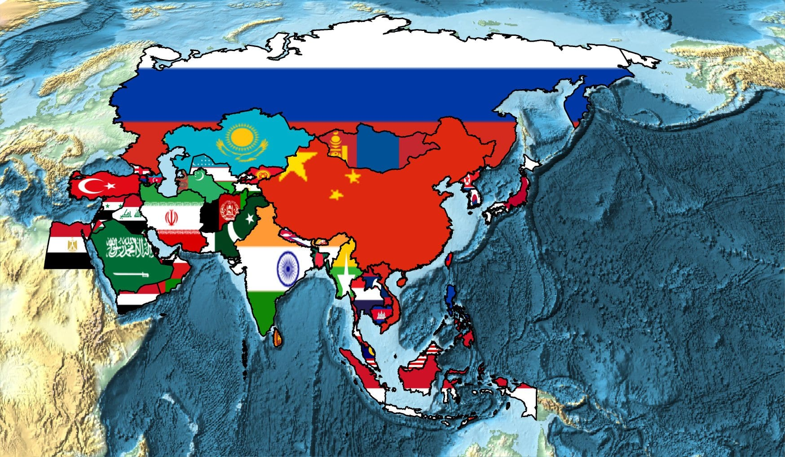
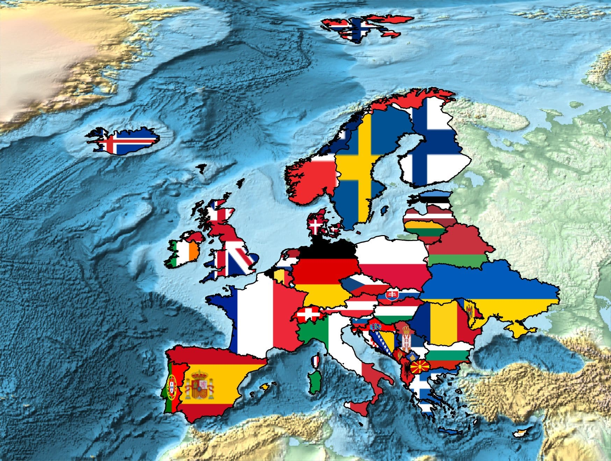
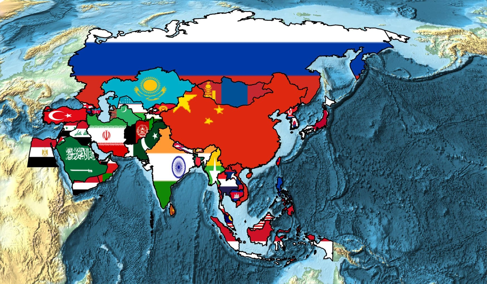
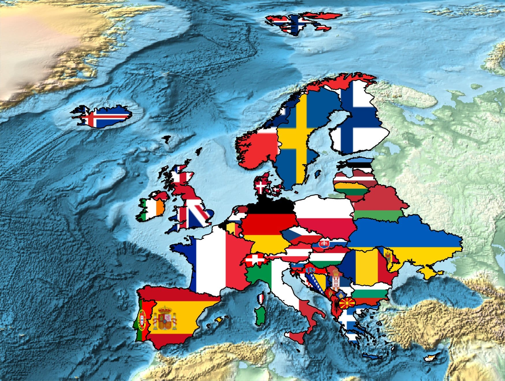

Ekte ülkemizin kesişiminde olduğu üç kıtanın ülkelerinin bayrakları
şeklindeki resmini görebilirsiniz. Resimleri Mathematica ile çizdirdim, bu tarz
resimleri kendiniz de rahatlıkla çizdirebilmeniz için en az bir programlama dili
tavsiye olunur


Örnek olarak Afrika için kullanılan kod:
GeoGraphics[{EdgeForm[Black],{GeoStyling[{"Image",#2}],Polygon[#1]}&@@@EntityValue[EntityClass["Country","Africa"],{"Entity","FlagImage"}]},GeoBackground->"ReliefMap",GeoProjection->"Robinson",ImageSize->Large]